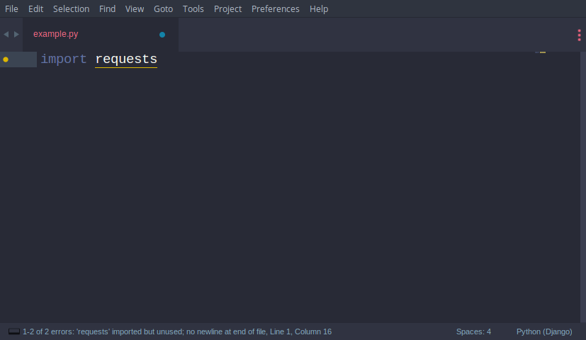

If you are one of those Awesome Python programmers who love Sublime Text then you have come to the right place. In this post, I will show you the settings and plugins I use as a Python programmer for Sublime. So let's make your Sublime more awesome.
User Settings:
Open Sublime Text.
Open the Sublime Text personal settings file:
Preferences > Settings
A file named Preferences.sublime-settings--User should open on the right-hand side. Add these lines to your User specific settings
{
// Your existings settings
"ensure_newline_at_eof_on_save": true,
"rulers":
[
72, 79
],
"tab_size": 4,
"translate_tabs_to_spaces": true,
"trim_trailing_white_space_on_save": true
}
These settings are self-explanatory but you aren't getting the "rulers" part, so according to pep8, docstrings and comments should be limited to 72 characters and all other lines should be limited to 79 characters. So these lines will help you when you are crossing your limits, further read PEP-8.
Packages/Plugins
We will be setting up the following packages one by one:
- Sublime Linter
- SublimeLinter-flake8
- Djaneiro
- PyYapf Python Formatter
- Anaconda
1. First Install SublimeLinter and Flake8 plugin
These packages are used to lint your code. Wondering what is code linting ?
A code linter is a program that analyses your source code for potential errors. The kinds of errors a linter can detect include:
- syntax errors;
- structural problems like the use of undefined variables.
- best practice or code style guideline violations.
Install Flake8
pip3 install flake8Then just to make sure flake8 is correctly installed -- run flake8 badly_formatted_python_program.py and it will show you all the error in your program
Install SublimeLinter
Open package control by pressing 'ctrl' + 'shift' +'p' and type 'install package' then click on the first result that appears. Then search for SublimeLinter
and press 'Enter' to install. After installing 'SublimeLinter, type this SublimeLinter-flake8 and install it. Restart your Sublime and after the previous steps completed, we can see the linting errors and warnings right in Sublime Text and update live as we code.

2. Install Djaneiro
Djaneiro supports Django templating and keyword highlighting and provides useful code snippets (tab completions) for Sublime Text. The snippet system is an incredible timesaver. You can create common Django blocks with only a few keystrokes for templates, models, forms, and views. Check out the official documentation to see a list of snippets. Docs-Djaneiro
Go to package control > install package and then search for package name Djaneiro
3. PyYapf Python formatter
I bet you are going to love this package as much as I do. First, let me introduce you to what is PyYapf, it is best explained in the README of it's Github repository. Here is demo if you want to see it in action
Most of the current formatters for Python --- e.g., autopep8, and pep8ify --- are made to remove lint errors from code. This has some obvious limitations. For instance, code that conforms to the PEP 8 guidelines may not be reformatted. But it doesn't mean that the code looks good. YAPF takes a different approach. It's based off of 'clang-format', developed by Daniel Jasper. In essence, the algorithm takes the code and reformats it to the best formatting that conforms to the style guide, even if the original code didn't violate the style guide. The idea is also similar to the 'gofmt' tool for the Go programming language: end all holy wars about formatting - if the whole codebase of a project is simply piped through YAPF whenever modifications are made, the style remains consistent throughout the project and there's no point arguing about style in every code review. The ultimate goal is that the code YAPF produces is as good as the code that a programmer would write if they were following the style guide. It takes away some of the drudgery of maintaining your code
Sounds interesting? Let's get started with the installation
Fire-up your terminal and install
pip3 install yapfThen open Sublime Text and as always open package control > Install package and search for package named PyYapf Python Formatter and install it.
Restart Sublime and select any poorly formatted python code and press 'ctrl'+'alt'+'f' and the code you selected should be reformatted according to the Python style guidelines. If you don't select any line in and hit 'ctrl'+'alt'+'f' then your whole file will be reformatted (Cool Right ?)
4. Anaconda
Anaconda is ultimate python package because it adds a number of IDE like features to your Sublime Text Editor. To name a few, It includes
- Show Documentation
- Autocompletion
- McCabe code complexity checker
- Code Linting
- Goto Definition
Search for a package named Anaconda and install it. I use a different linter package (SublimeLinter-flake8, which we installed in Step 1 of this post) so I disable linting altogether within the user-defined Anaconda settings file, Anaconda.sublime-settings, via the file menu: Sublime > Preferences > Package Settings > Anaconda > Settings - User: {"anaconda_linting": false}
If you have installed both PyYapf and Anaconda then the 'ctrl'+'alt'+'f' may not work because Anaconda uses this keybinding for the "finding all the usages of the selected word". So, You have to change this shortcut to work with PyYapf. One way to do this is Go to Preferences > Package Settings > Anaconda > Key Bindings - Default and find command anaconda_find_usages then change its key value from ["ctrl+alt+f"] to ["ctrl+alt+a"]
# NOTE: If you are on Linux and facing some difficulty while installing or some of the packages are not working as expected then try installing the module with sudo's H flag for e.g sudo -H install <module_name> or you can comment down below and I would love to help.
That's it from my side, Is there any package you want it to be added to this post? What are your favourite packages for Sublime?
blog comments powered by Disqus